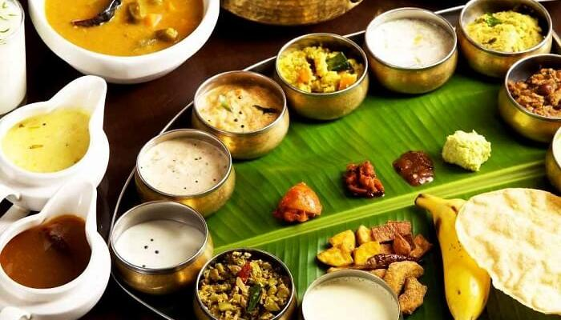

Kerala
Food:
The Kerala staple food revolves around an abundance of
coconut, rice, tapioca, and spices like black pepper,
cloves, cinnamon, and ginger. Kerala famous food also features a variety
of seafood like fish, prawns, mussels, lobsters, and crabs owing to the state's long coastline.
Vegetation:

The forest types of Kerala include Tropical Wet Evergreen Forests,
Tropical Moist Deciduous Forests, Tropical Dry Deciduous Forests, Mountain Sub Tropical, Rolling Grasslands,
Shola Forest, Thorny Scrub Forest, high Sholas etc.. This wide range of forest types enables the growth of a rich variety of flora.
Climate:

Kerala, which lies in the tropic region, is mostly subject to the type of humid
tropical wet climate experienced by most of Earth's rainforests.
Meanwhile, its extreme eastern fringes experience a drier tropical wet and dry climate.
... Kerala's average maximum daily temperature is around 37 °C; the minimum is 19.8 °C.